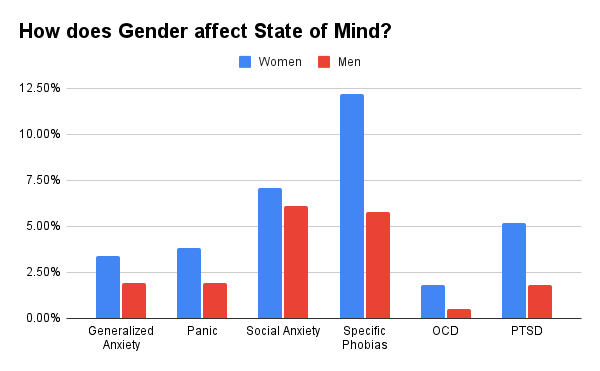
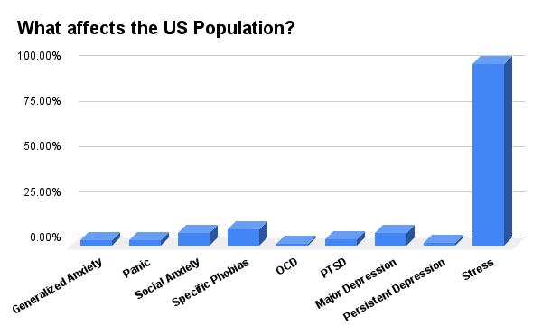
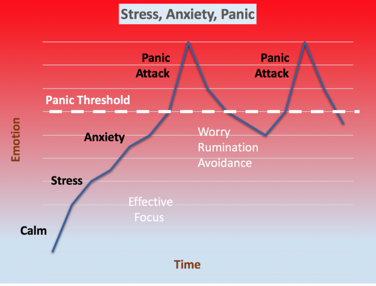
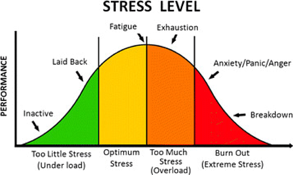
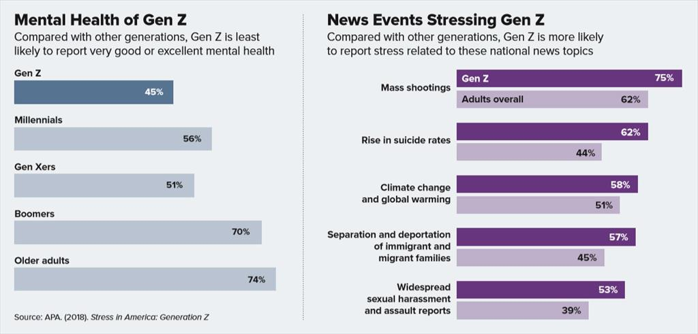

This graph shows the distribution of stress among different age groups. From this, we can conclude that stress levels are consistent througout peoples' lives until they turn 60, around the age they retire. By a small margin, the 0-18 age group experiences the most stress, which includes most of the gen-z and teens today.
This graph displays whether or not gender is a factor in the levels of mental illness such as anxiety, stress, and depression. It is remarkably clear that women are affected more by mental illness than men are in every category. This could possibly be because of socioeconomic conditions and different standards.
This graph demonstrates the frequencies of different types of mental illness in America. The most common one is stress, which everyone experiences at least one time in their life. It is clear that stress is inevitable and cannot be avoided, so you must deal with it.
This graph demonstrates the relationship between stress, anxiety, and panic. There is a form of healthy stress where you are motivated to be productive, but anything above that borders on anxiety, which is unhealthy. If you do not manage your anxiety, you may have panic attacks, and your productivity may decrease drastically.
This graph further dives into the idea of healthy stress and the progression that will lead to burnout. Maintaining a healthy stress level that will allow you to be your best self is extremely difficult, and many people struggle to find a balance. Luckily, this website has tools to help you learn about and manage your stress levels.
This last chart compares Generation Z's mental health to other generations, as well as showing what causes stress for us. Firstly, we can see that generation Z is the generation most affected by mental instability. This is in part due to stressors that other generations didn't have to deal with, like mass shootings, school shootings, suicide, and global warming.